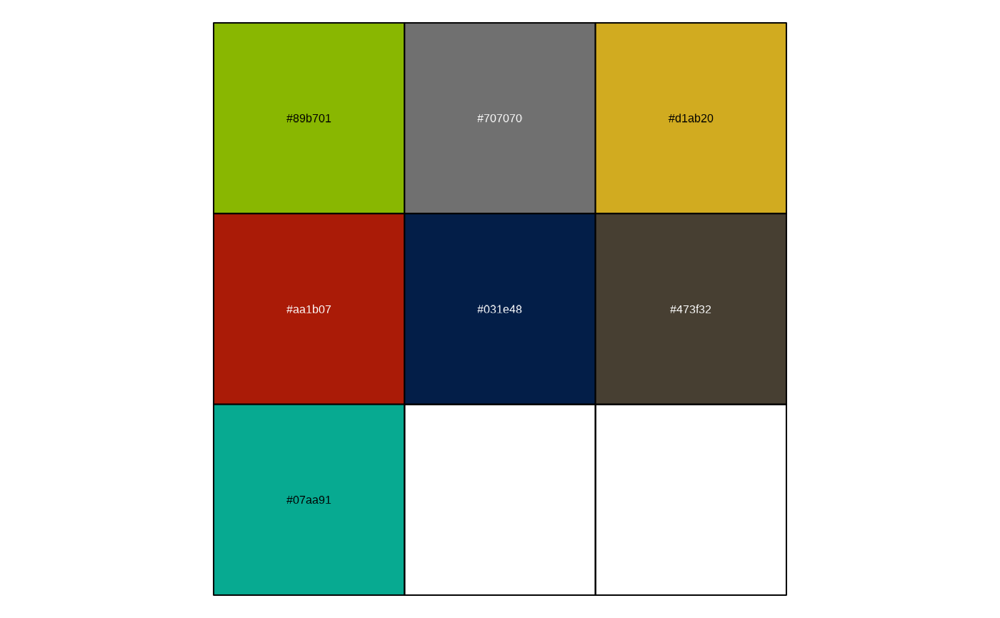
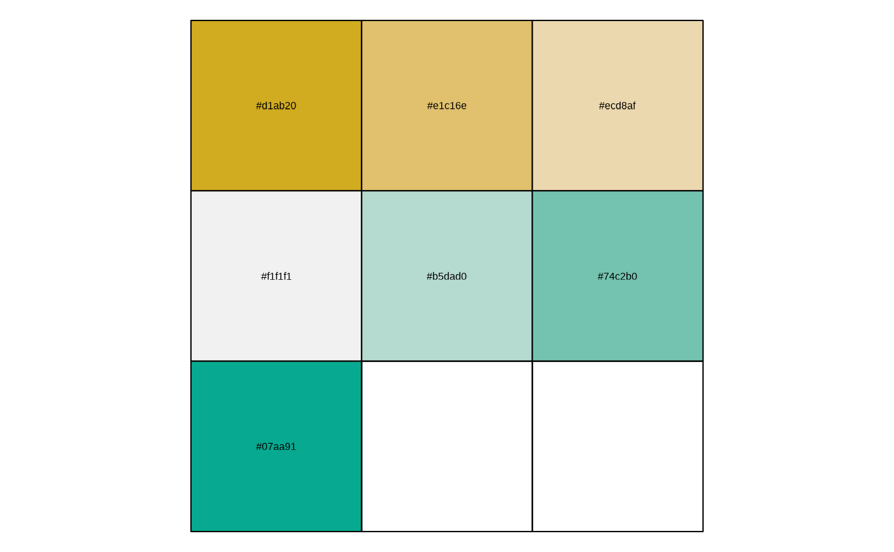
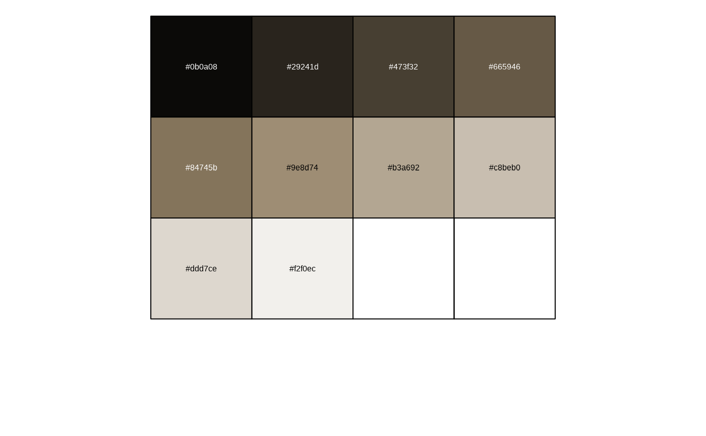

Sets of colour palettes for use in Cesar Australia data visualisations. Colours are stored as a named list. Use palette name or position to call in colours.
Colour sets are stored as the name of the first colour:
Calling cesar_palettes$cesar will return the seven color palette where Cesar green is the base.
Calling cesar_palettes$cesar_green_c will return an interpolated ramp of 10 colors for Cesar green.
Examples
# List names of palettes available
names(cesar_palettes)
#> [1] "cesar" "cesar_light" "cesar_green_c" "hobgoblin_c"
#> [5] "warm_grey_c" "oxford_blue_c" "rufous_c" "galliano_c"
#> [9] "neutral_c" "green_brown_d" "teal_orange_d" "orange_green_d"
#> [13] "gold_teal_d"
scales::show_col(cesar_palettes$cesar)

scales::show_col(cesar_palettes$gold_teal_d)

scales::show_col(cesar_palettes$warm_grey_c)
